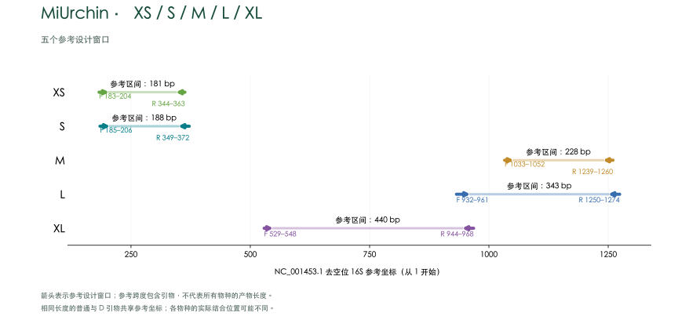
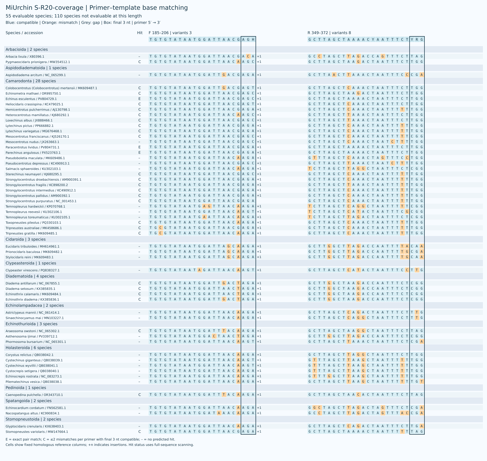
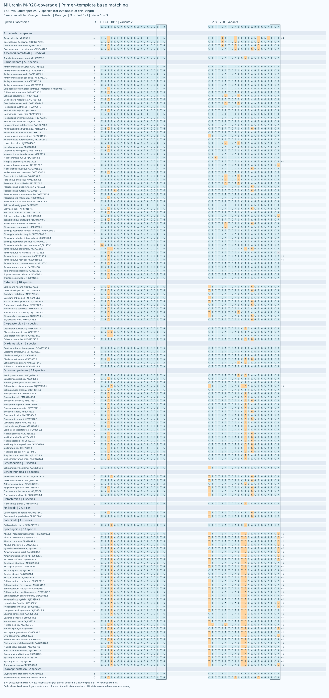
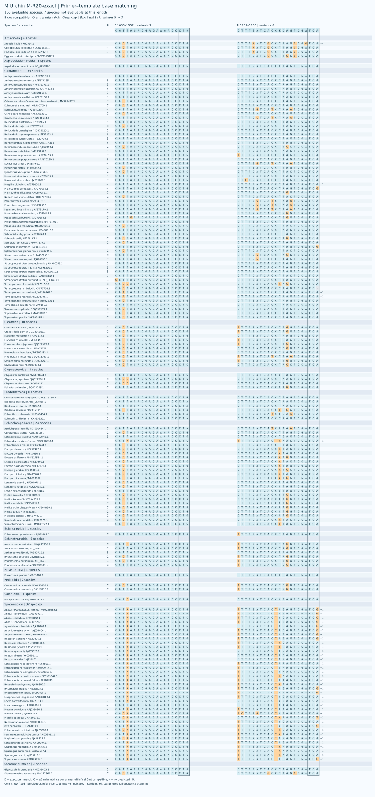
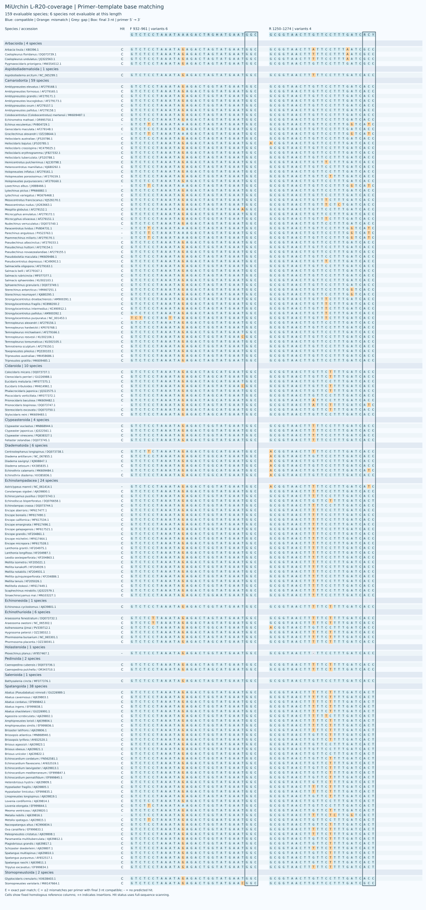
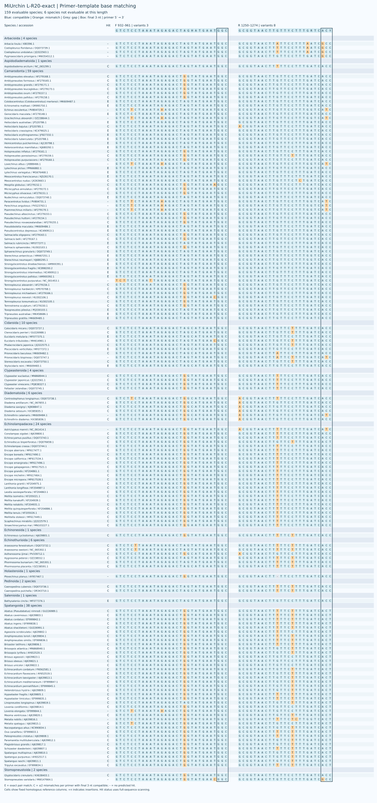
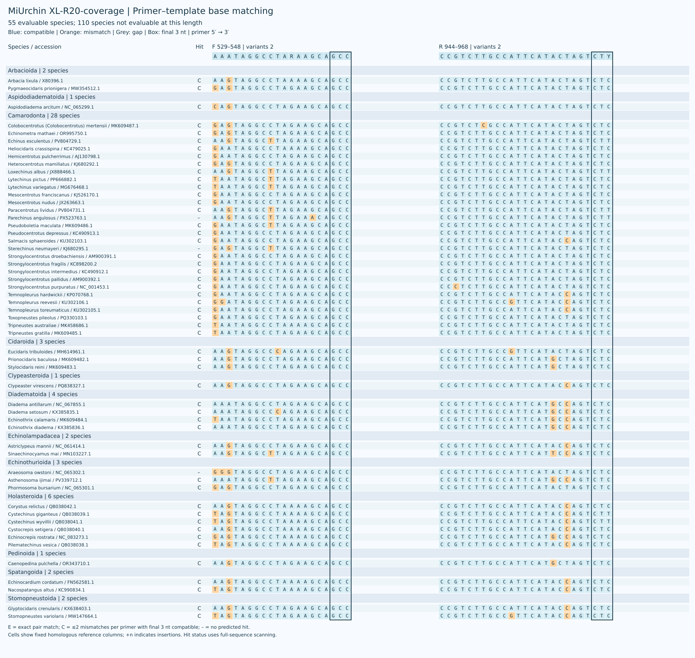
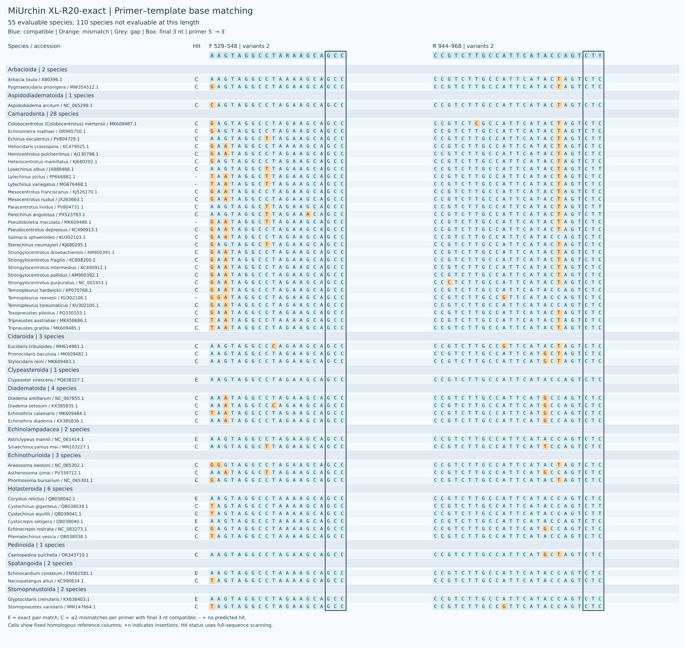

海胆环境 DNA 线粒体 16S rRNA 候选引物，包含 S、M、L、XL 四个长度。每个物种保留一条参考序列，以可评价物种等权作为主指标；各目结果单独报告。 参考面板包含 165 个物种；S、M、L、XL 分别有 55、158、159、55 个物种可评价。不可评价并不等于漏检。置顶图为旧分类框架下的代表性示意；新面板的目级名称以 WoRMS 为准。
参考面板 / Reference panel · 参考序列审核 / Reference curation · S · M · L · XL

| Candidate | Species coverage | Exact | Strict WC / GT | WC≤3 / GT≤2 |
|---|---|---|---|---|
| S-R20-coverage | 29/55 (52.73%) | 3/55 (5.45%) | 0 / 0 | 0 / 0 |
| S-R20-exact | 29/55 (52.73%) | 3/55 (5.45%) | 0 / 0 | 3 / 0 |
| M-R20-coverage | 110/158 (69.62%) | 28/158 (17.72%) | 0 / 0 | 0 / 0 |
| M-R20-exact | 103/158 (65.19%) | 33/158 (20.89%) | 0 / 0 | 0 / 0 |
| L-R20-coverage | 147/159 (92.45%) | 0/159 (0.00%) | 2 / 12 | 15 / 12 |
| L-R20-exact | 141/159 (88.68%) | 30/159 (18.87%) | 2 / 12 | 12 / 12 |
| XL-R20-coverage | 52/55 (94.55%) | 0/55 (0.00%) | 2 / 19 | 10 / 19 |
| XL-R20-exact | 51/55 (92.73%) | 6/55 (10.91%) | 0 / 4 | 6 / 6 |
| XL-R100-exact | 51/55 (92.73%) | 10/55 (18.18%) | 2 / 19 | 12 / 21 |
覆盖：正反引物各最多 2 个错配、末端 3 nt 兼容；完全匹配：双引物零错配。WC≤3 / GT≤2 不施加末端约束。非目标统计为参考记录数。
新 D 引物每条简并度不超过 8，简并位点限于 3′ 半段；覆盖优先和完全匹配优先候选分别保留。原有普通单对保留，其表现未在本轮新面板重新评价。
M-R20-coverage 预测覆盖 110/158 个物种、完全匹配 28 个；原 D 分别为 104 和 21。L-R20-coverage 覆盖 147/159、完全匹配为 0；L-R20-exact 覆盖 141/159、完全匹配 30 个，原 L D 分别为 145 和 28。XL-R100-exact 的序列与原 XL D 相同。原 D 的对照结果保留在筛选表中。
| Name | F | R |
|---|---|---|
| S | TGTGTATAATGGATTAACGAGA |
GCTTAGCTAAAACTAATTTCTTGG |
| S-R20-coverage | TGTGTATAATGGATTAACGAGH |
GCTTAGCTAAAACYAATTTCTYRG |
| S-R20-exact | TGTGTATAATGGATTAACRAGH |
GCTTAGCTTAAACYAATTTCTYGR |

| Name | F | R |
|---|---|---|
| M | CGTTAGACGAGAAGACCCTG |
CTTTGATCACCTTAGTGGATCA |
| M-R20-coverage | CGTTAGACGAGAAGACCCTR |
CTTTGATCACCTDARTGGATCA |
| M-R20-exact | CGTTAGACGAGAAGACCCTR |
CTTTGATCACCKDAGTGGATCA |


| Name | F | R |
|---|---|---|
| L | GTCTCCTAAATAGAGACTAGTATGAATGGC |
GCGGTAACTTGTTCCTTTGATCACC |
| L-R20-coverage | GTCTCCTAAATAAAGACTRGHATGAATGGC |
GCGGTAACTTGTTCCTTTGATCRCY |
| L-R20-exact | GTCTCCTAAATAGAGACTAGHATGAATGGC |
GCGGTAACTTGTTYCTTTGRTCACY |


| Name | F | R |
|---|---|---|
| XL | GAATAGGCCTAGAAGCAGCC |
CCGTCTTGCCATTCATACTAGTCTC |
| XL-R20-coverage | AAATAGGCCTARAAGCAGCC |
CCGTCTTGCCATTCATACTAGTCTY |
| XL-R20-exact | AAGTAGGCCTARAAGCAGCC |
CCGTCTTGCCATTCATACCAGTCTY |
| XL-R100-exact | AAGTAGGCCTARAAGCAGCC |
CCGTCTTGCCATTCATRCYAGTCTY |


计算预测需要实验验证。
Screening / 筛选结果 · Scripts / 脚本 · Methods / 方法 · Validation / 验证 · Copyright